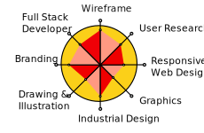

RISHABH RANA
I am a India-based UX/UI designer, amateur illustrator and clumsy code learner.
While i was graduating from my bachelor’s degree in India, I worked as a UX/UI designer for more than two years and successfully provided design services and consultation for both non-commercial projects and several start-up companies in india. I am self taught & I embarked on my journey into Full Stack Web Developing from websites like w3school.com, stackoverflow.com, github.com, codepen.io and several others.
Self motivation, a strong sense of responsibility and excellent problem-solving skills come from my passion to bring delightful user experiences to life, by bridging the physical and digital worlds.
While i was graduating from my bachelor’s degree in India, I worked as a UX/UI designer for more than two years and successfully provided design services and consultation for both non-commercial projects and several start-up companies in india. I am self taught & I embarked on my journey into Full Stack Web Developing from websites like w3school.com, stackoverflow.com, github.com, codepen.io and several others.
Self motivation, a strong sense of responsibility and excellent problem-solving skills come from my passion to bring delightful user experiences to life, by bridging the physical and digital worlds.
